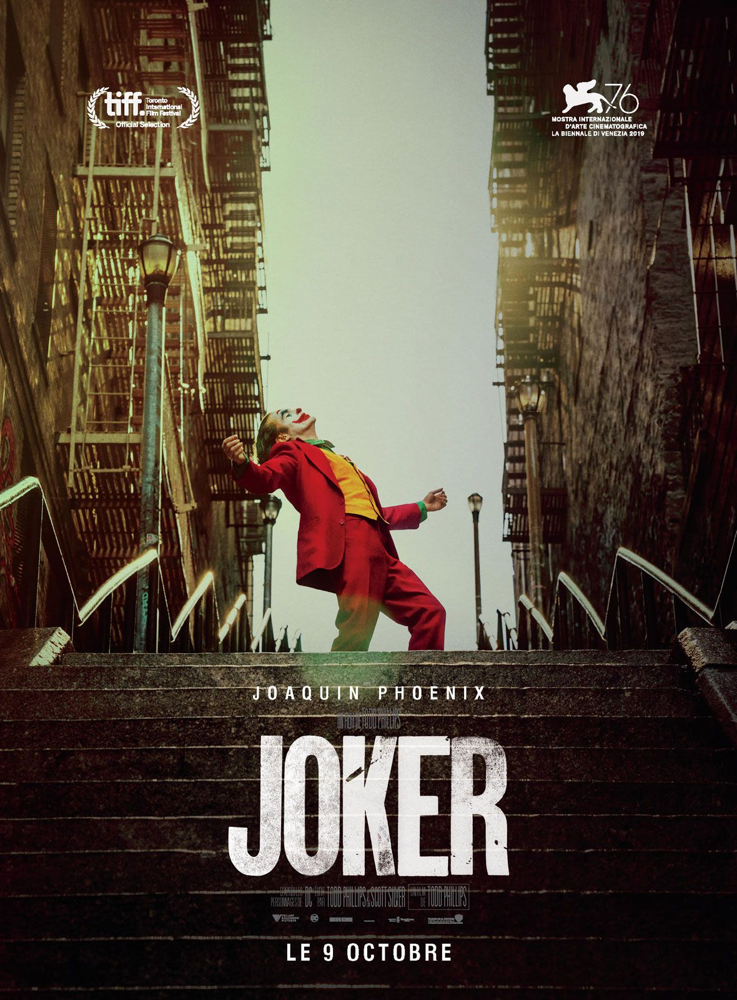
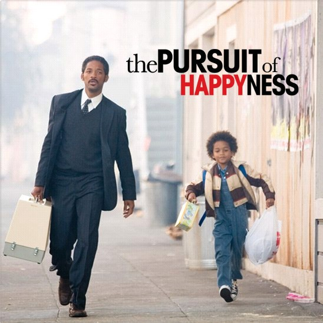

Movie Title
a brief description about jocker
This movie serves as the origin story for the Joker character, who, as you know, goes on to terrorize Gotham and make serious trouble for Batman. Arthur is an aspiring comedian who suffers from an ambiguous mental illness that he tries to get treatment for. Arthur faces a turning point and goes on a violent streak.
3 Idiots
a brief description about jocker
the movie represents a real story of our society.the main theme of the movie is "learn anything by heart to achieve highest level of the goal there is also focuses on our ordinary education system. in the movie impreal college of engineering follow a poor education system.For this reason students of that college try to achieve better grade learning their lesson by only memmorizing. the symbol of memmorizing without understanding represent by chatur who has a good career by the symbol of memmprizing by heart and experiment represent by Ramcho who achieves the highestposition of career. this is the theme of the movie.Interstellar
a brief description about jocker
In the near future, the Earth is less and less hospitable to humanity, which is experiencing a serious food crisis. The film tells the adventures of a group of explorers who use a recently discovered rift in space-time to push back human limits and conquer astronomical distances in an interstellar journey.
